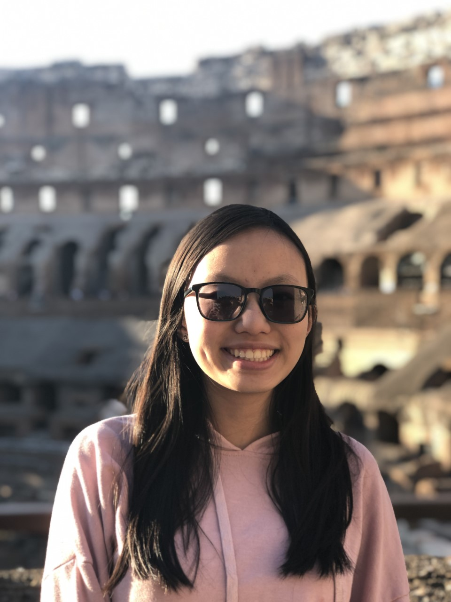

Mary's Website Computer Science Period 6
Hi there, I'm Mary Dam! I'm a simple, humourous person, and you'll often see me laughing at something. I am currently a junior at DSST: College View High School. I am the oldest of 3 kids, and I'm proud to be a Dam kid. You will often see me hanging out with my friends, siblings, or cousins. Whether it is cracking cringey jokes or playing an intense card game, I will always be smiling and having a good time. Also, you can catch me drinking some chocolate milk or milk tea.
The main purpose of this site is to create a portfolio for my Computer Science class and showcase all of the projects I have done over the course of 2 trimesters.
Projects I've Worked On:
My Resume
Take a look at the cool things I have done with my life!